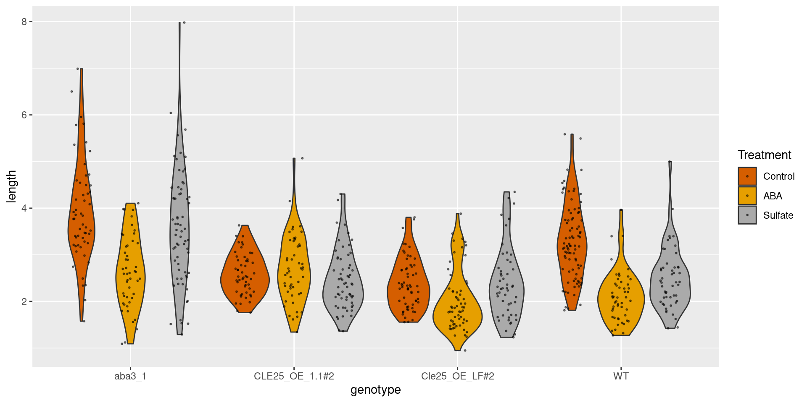
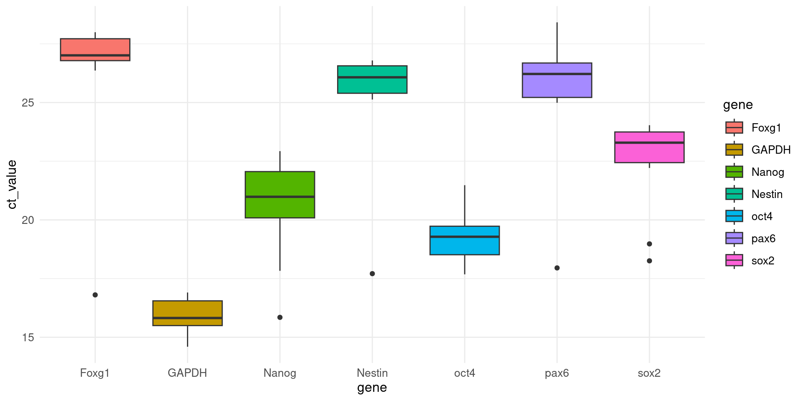
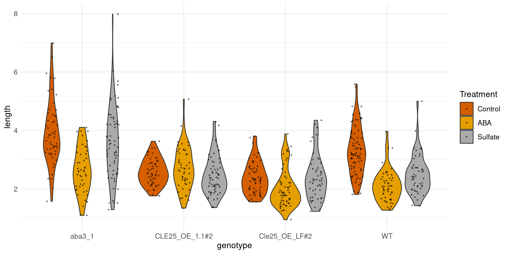
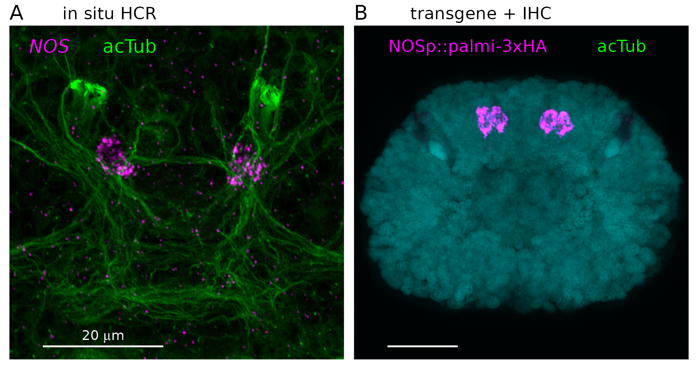
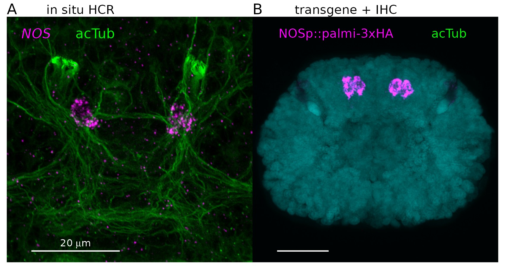

[1] "/home/gj274/code/RStudio_paper_writing_course/presentation"Rstudio in Data Science and Paper Writing - Day 1
Gáspár Jékely
Course program
Day 1
- Part 1: Why open science? Project management, data import, tidy data
12:30-13:30 lunch break
Part 2: Plotting, figure assembly
Day 2
- Part 3: Manuscript writing, tables, references, data and figure embedding
12:30-13:30 lunch break
Part 4: GitHub, collaboration, sharing, version control
Resources
- The Tidyverse Cookbook (edited by Garrett Grolemund) https://rstudio-education.github.io/tidyverse-cookbook/
Why do we need open science
- Reproducibility crisis
- Only a small fraction of research data is available
- An even smaller fraction of code is available (physicists are notoriously bad in sharing)
- Open access, if exists, is very expensive and maintains the profit of legacy publishers
- Scholarly literature is antiquated, dysfunctional and rewards prestige/hype over quality and integrity
- Scholarly workflows use non-professional, error-prone, closed-source software (MS, Adobe, Prism etc.) that makes sharing, integration, automation and collaboration difficult
- The final product of years of research is often only a single pdf file (1990s tech) behind a paywall
- Data, code and text are not searchable, reuseable, discoverable, shareable
Most source data collected by scientists are not available

Most scientists use software developed for accounting
- the symbol MARCH1 has now become MARCHF1, while SEPT1 has become SEPTIN1, and so on
Gene name errors are widespread in the scientific literature

Code is very often not shared or not shared stably
- We assess the effectiveness of such a policy by (i) requesting data and code from authors and (ii) attempting replication of the published findings. We chose a random sample of 204 scientific papers published in the journal Science … We found that we were able to obtain artifacts from 44% of our sample and were able to reproduce the findings for 26%.
“When you approach a PI for the source codes and raw data, you better explain who you are, whom you work for, why you need the data and what you are going to do with it.”
“I have to say that this is a very unusual request without any explanation! Please ask your supervisor to send me an email with a detailed, and I mean detailed, explanation.”
“The data files remains our property and are not deposited for free access. Please, let me know the purpose you want to get the file and we will see how we can help you.”
“We do not typically share our internal data or code with people outside our collaboration.”
sigh…

Current state of scholarly digital infrastructure and knowhow

What this course is about: what you can do to be open
- tools and approaches for transparent and open publishing
- a paper is not only text and figures, but also data and code
- all should be shared for reproducibility and openness
- otherwise it is not really ‘published’
- we will use Rstudio to learn a comprehensive paper-writing pipeline
- code, tabulated data, figures, text, references, supplements all in one place
- collaborative working and sharing via GitHub (or other public repository)
- the figures are linked to their underlying data and code to generate them
- efficient version control
- faster, more transparent and reproducible workflow
- no software license is needed (no MS, no Adobe, no Matlab)
- once you master the approach I advocate, you don’t want to go back…
Part 1 - Packages, project management, data import, tidy data
- some rules on files, folders
- R projects
- installing and loading packages
- project templates
- importing various types of datasets
- principles of tidy data, tidying of messy datasets
Rule nr. 1 – relative working directories
Never use absolute paths in your scripts, because they hinder sharing: no one else will have exactly the same directory configuration as you.
Do not use setwd() to set your working dir
Keep all files associated with a project together — input data, R scripts, analytical results, figures. This is such a wise and common practice that RStudio has built-in support for this via Rprojects.
If you create a new Rproject, your working dir will in general be where you save the new project
Whenever you refer to a file with a relative path it will look for it in your wd.
[1] "custom.scss"
[2] "images"
[3] "references.bib"
[4] "RStudio_paper_writing_course_presentation_day1_files"
[5] "RStudio_paper_writing_course_presentation_day1.html"
[6] "RStudio_paper_writing_course_presentation_day1.qmd"
[7] "RStudio_paper_writing_course_presentation_day1.rmarkdown"
[8] "RStudio_paper_writing_course_presentation_day2_files"
[9] "RStudio_paper_writing_course_presentation_day2.html"
[10] "RStudio_paper_writing_course_presentation_day2.qmd"
[11] "RStudio_paper_writing_course_presentation_files"
[12] "RStudio_paper_writing_course_presentation.html"
[13] "sessionInfo.txt" Project management
Use folders relative to your main .Rproject file (e.g. My_next_paper.Rproject)
Use a consistent directory structure to store code, data, text, figures, supplements, etc.
Can be ensured if you always use the same project template
We will use https://github.com/JekelyLab/RStudio_paper_writing_course
Go to github and clone the project to your account (“Use this template”)
Go to RStudio -> new project -> version control -> git -> git URL of your new project
select local dir and download the project with all directories to your computer
let’s check the project
you can rename the .Rproject file to ‘my favourite file name’
Installing packages
- install the tidyverse package
- then load the package
You can source packages and functions from one file
open the R script analysis/scripts/Course_exercises.R with the example code
source several packages and functions, listed in one file consistently across scripts
General good practice – avoid spaces in file names
[1] "24_01_22qpcr_1 - ash pal.xlsx"
[2] "240323 CIN Exp278 reporter assay - Anchel.xlsx"
[3] "a-Syn-Data.csv"
[4] "data - José - March 2024.xlsx"
[5] "head_celltypes_syn_matrix.csv"
[6] "Key_resource_table.xls"
[7] "Key_resource_table.xlsx"
[8] "Tom_filopodia_analyses.csv"
[9] "Tom_filopodia_analyses.csv~" # A tibble: 692 × 3
Treatment genotype length
<chr> <chr> <dbl>
1 Control CLE25_OE_1.1#2 2.19
2 Control CLE25_OE_1.1#2 2.62
3 Control CLE25_OE_1.1#2 2.67
4 Control CLE25_OE_1.1#2 2.28
5 Control CLE25_OE_1.1#2 2.21
6 Control CLE25_OE_1.1#2 2.83
7 Control CLE25_OE_1.1#2 2.13
8 Control CLE25_OE_1.1#2 2.76
9 Control CLE25_OE_1.1#2 2.88
10 Control CLE25_OE_1.1#2 2.95
# ℹ 682 more rowsSave and share your computer environment and packages
R version 4.3.2 (2023-10-31)
Platform: x86_64-pc-linux-gnu (64-bit)
Running under: Ubuntu 22.04.4 LTS
Matrix products: default
BLAS: /usr/lib/x86_64-linux-gnu/blas/libblas.so.3.10.0
LAPACK: /usr/lib/x86_64-linux-gnu/lapack/liblapack.so.3.10.0
locale:
[1] LC_CTYPE=en_GB.UTF-8 LC_NUMERIC=C
[3] LC_TIME=en_GB.UTF-8 LC_COLLATE=en_GB.UTF-8
[5] LC_MONETARY=en_GB.UTF-8 LC_MESSAGES=en_GB.UTF-8
[7] LC_PAPER=en_GB.UTF-8 LC_NAME=C
[9] LC_ADDRESS=C LC_TELEPHONE=C
[11] LC_MEASUREMENT=en_GB.UTF-8 LC_IDENTIFICATION=C
time zone: Europe/London
tzcode source: system (glibc)
attached base packages:
[1] stats graphics grDevices utils datasets methods base
other attached packages:
[1] tinytable_0.0.5 janitor_2.2.0 magick_2.8.3 rstudioapi_0.15.0
[5] ggpubr_0.6.0 RColorBrewer_1.1-3 patchwork_1.2.0 png_0.1-8
[9] cowplot_1.1.3 lubridate_1.9.3 forcats_1.0.0 stringr_1.5.1
[13] dplyr_1.1.4 purrr_1.0.2 readr_2.1.5 tidyr_1.3.1
[17] tibble_3.2.1 ggplot2_3.5.0 tidyverse_2.0.0
loaded via a namespace (and not attached):
[1] utf8_1.2.4 generics_0.1.3 rstatix_0.7.2 stringi_1.8.3
[5] hms_1.1.3 digest_0.6.34 magrittr_2.0.3 evaluate_0.23
[9] grid_4.3.2 timechange_0.3.0 fastmap_1.1.1 cellranger_1.1.0
[13] jsonlite_1.8.8 backports_1.4.1 fansi_1.0.6 scales_1.3.0
[17] abind_1.4-5 cli_3.6.2 rlang_1.1.3 munsell_0.5.0
[21] withr_3.0.0 yaml_2.3.8 tools_4.3.2 tzdb_0.4.0
[25] ggsignif_0.6.4 colorspace_2.1-0 broom_1.0.5 vctrs_0.6.5
[29] R6_2.5.1 lifecycle_1.0.4 snakecase_0.11.1 car_3.1-2
[33] pkgconfig_2.0.3 pillar_1.9.0 gtable_0.3.4 Rcpp_1.0.12
[37] glue_1.7.0 xfun_0.42 tidyselect_1.2.0 knitr_1.45
[41] htmltools_0.5.7 carData_3.0-5 rmarkdown_2.25 compiler_4.3.2
[45] readxl_1.4.3 Read and preview data 1
# A tibble: 6 × 3
Treatment genotype length
<chr> <chr> <dbl>
1 Control CLE25_OE_1.1#2 2.19
2 Control CLE25_OE_1.1#2 2.62
3 Control CLE25_OE_1.1#2 2.67
4 Control CLE25_OE_1.1#2 2.28
5 Control CLE25_OE_1.1#2 2.21
6 Control CLE25_OE_1.1#2 2.83Rows: 692
Columns: 3
$ Treatment <chr> "Control", "Control", "Control", "Control", "Control", "Cont…
$ genotype <chr> "CLE25_OE_1.1#2", "CLE25_OE_1.1#2", "CLE25_OE_1.1#2", "CLE25…
$ length <dbl> 2.190, 2.622, 2.673, 2.276, 2.209, 2.829, 2.130, 2.761, 2.88…tibble [692 × 3] (S3: tbl_df/tbl/data.frame)
$ Treatment: chr [1:692] "Control" "Control" "Control" "Control" ...
$ genotype : chr [1:692] "CLE25_OE_1.1#2" "CLE25_OE_1.1#2" "CLE25_OE_1.1#2" "CLE25_OE_1.1#2" ...
$ length : num [1:692] 2.19 2.62 2.67 2.28 2.21 ... Treatment genotype length
Length:692 Length:692 Min. :0.948
Class :character Class :character 1st Qu.:2.071
Mode :character Mode :character Median :2.566
Mean :2.746
3rd Qu.:3.270
Max. :7.981 Your workspace in R
- Recreate, rather than save workspace, save your coda and data, not workspace

Read and preview data 2
data_Ashwini <- readxl::read_excel("../analysis/data/24_01_22qpcr_1 - ash pal.xlsx")
head(data_Ashwini)# A tibble: 6 × 23
Gene Days `Raw Data` `Ct Value` `Dt Ct` `2^(-dct)` `MEAN 2^(-dCt)`
<chr> <chr> <chr> <chr> <dbl> <dbl> <dbl>
1 Nanog d0 J1 22.491 6.96 0.00805 0.0809
2 <NA> d0 J2 19.876999999999999 4.40 0.0475 NA
3 <NA> d0 J3 19.164000000000001 2.42 0.187 NA
4 <NA> d7 J4 21.177 4.67 0.0393 0.0319
5 <NA> d7 J5 21.812000000000001 4.93 0.0327 NA
6 <NA> d7 J6 22.303000000000001 5.40 0.0237 NA
# ℹ 16 more variables: `SD 2^(-dCt)` <dbl>, ...9 <lgl>, ...10 <lgl>,
# ...11 <chr>, ...12 <chr>, ...13 <chr>, ...14 <chr>, ...15 <chr>,
# ...16 <chr>, ...17 <chr>, ...18 <chr>, ...19 <chr>, ...20 <chr>,
# ...21 <chr>, ...22 <chr>, ...23 <chr>Rows: 105
Columns: 23
$ Gene <chr> "Nanog", NA, NA, NA, NA, NA, NA, NA, NA, NA, NA, NA, N…
$ Days <chr> "d0", "d0", "d0", "d7", "d7", "d7", "d11", "d11", "d11…
$ `Raw Data` <chr> "J1", "J2", "J3", "J4", "J5", "J6", "J7", "J8", "J9", …
$ `Ct Value` <chr> "22.491", "19.876999999999999", "19.164000000000001", …
$ `Dt Ct` <dbl> 6.956, 4.396, 2.418, 4.668, 4.934, 5.397, 7.436, 7.413…
$ `2^(-dct)` <dbl> 0.008054440, 0.047497652, 0.187115373, 0.039336162, 0.…
$ `MEAN 2^(-dCt)` <dbl> 0.08088916, NA, NA, 0.03192712, NA, NA, 0.14529882, NA…
$ `SD 2^(-dCt)` <dbl> 0.094084796, NA, NA, 0.007831512, NA, NA, 0.241582234,…
$ ...9 <lgl> NA, NA, NA, NA, NA, NA, NA, NA, NA, NA, NA, NA, NA, NA…
$ ...10 <lgl> NA, NA, NA, NA, NA, NA, NA, NA, NA, NA, NA, NA, NA, NA…
$ ...11 <chr> NA, NA, NA, NA, NA, NA, NA, NA, NA, "d0", "d7", "d11",…
$ ...12 <chr> NA, NA, NA, NA, NA, NA, NA, "Nanog", NA, "8.0889155034…
$ ...13 <chr> NA, NA, NA, NA, NA, NA, NA, NA, "SD", "9.4084795965414…
$ ...14 <chr> NA, NA, NA, NA, NA, NA, NA, "oct4", NA, "0.31103134803…
$ ...15 <chr> NA, NA, NA, NA, NA, NA, NA, NA, "SD", "0.1837141821452…
$ ...16 <chr> NA, NA, NA, NA, NA, NA, NA, "sox2", NA, "1.21068833126…
$ ...17 <chr> NA, NA, NA, NA, NA, NA, NA, NA, "SD", "5.0018821338136…
$ ...18 <chr> NA, NA, NA, NA, NA, NA, NA, "Nestin", NA, "1.005919450…
$ ...19 <chr> NA, NA, NA, NA, NA, NA, NA, NA, "SD", "3.7803772492582…
$ ...20 <chr> NA, NA, NA, NA, NA, NA, NA, "pax6", NA, "2.02563640616…
$ ...21 <chr> NA, NA, NA, NA, NA, NA, NA, NA, "SD", "9.0704917358939…
$ ...22 <chr> NA, NA, NA, NA, NA, NA, NA, "Foxg1", NA, "2.8294514961…
$ ...23 <chr> NA, NA, NA, NA, NA, NA, NA, NA, "SD", "1.7496262363729…tibble [105 × 23] (S3: tbl_df/tbl/data.frame)
$ Gene : chr [1:105] "Nanog" NA NA NA ...
$ Days : chr [1:105] "d0" "d0" "d0" "d7" ...
$ Raw Data : chr [1:105] "J1" "J2" "J3" "J4" ...
$ Ct Value : chr [1:105] "22.491" "19.876999999999999" "19.164000000000001" "21.177" ...
$ Dt Ct : num [1:105] 6.96 4.4 2.42 4.67 4.93 ...
$ 2^(-dct) : num [1:105] 0.00805 0.0475 0.18712 0.03934 0.03271 ...
$ MEAN 2^(-dCt): num [1:105] 0.0809 NA NA 0.0319 NA ...
$ SD 2^(-dCt) : num [1:105] 0.09408 NA NA 0.00783 NA ...
$ ...9 : logi [1:105] NA NA NA NA NA NA ...
$ ...10 : logi [1:105] NA NA NA NA NA NA ...
$ ...11 : chr [1:105] NA NA NA NA ...
$ ...12 : chr [1:105] NA NA NA NA ...
$ ...13 : chr [1:105] NA NA NA NA ...
$ ...14 : chr [1:105] NA NA NA NA ...
$ ...15 : chr [1:105] NA NA NA NA ...
$ ...16 : chr [1:105] NA NA NA NA ...
$ ...17 : chr [1:105] NA NA NA NA ...
$ ...18 : chr [1:105] NA NA NA NA ...
$ ...19 : chr [1:105] NA NA NA NA ...
$ ...20 : chr [1:105] NA NA NA NA ...
$ ...21 : chr [1:105] NA NA NA NA ...
$ ...22 : chr [1:105] NA NA NA NA ...
$ ...23 : chr [1:105] NA NA NA NA ... Gene Days Raw Data Ct Value
Length:105 Length:105 Length:105 Length:105
Class :character Class :character Class :character Class :character
Mode :character Mode :character Mode :character Mode :character
Dt Ct 2^(-dct) MEAN 2^(-dCt) SD 2^(-dCt)
Min. : 0.000 Min. :0.0001406 Min. :0.00020 Min. :0.00000
1st Qu.: 2.853 1st Qu.:0.0009202 1st Qu.:0.00101 1st Qu.:0.00015
Median : 6.906 Median :0.0083435 Median :0.03660 Median :0.00123
Mean : 6.362 Mean :0.1927351 Mean :0.19091 Mean :0.05215
3rd Qu.:10.086 3rd Qu.:0.1384743 3rd Qu.:0.13341 3rd Qu.:0.04960
Max. :12.796 Max. :1.0000000 Max. :1.00000 Max. :0.49862
NA's :1 NA's :1 NA's :70 NA's :70
...9 ...10 ...11 ...12
Mode:logical Mode:logical Length:105 Length:105
NA's:105 NA's:105 Class :character Class :character
Mode :character Mode :character
...13 ...14 ...15 ...16
Length:105 Length:105 Length:105 Length:105
Class :character Class :character Class :character Class :character
Mode :character Mode :character Mode :character Mode :character
...17 ...18 ...19 ...20
Length:105 Length:105 Length:105 Length:105
Class :character Class :character Class :character Class :character
Mode :character Mode :character Mode :character Mode :character
...21 ...22 ...23
Length:105 Length:105 Length:105
Class :character Class :character Class :character
Mode :character Mode :character Mode :character
Tidy data - definitions
from https://r4ds.hadley.nz/data-visualize
- A variable is a quantity, quality, or property that you can measure
- A value is the state of a variable when you measure it. The value of a variable may change from measurement to measurement.
- An observation is a set of measurements made under similar conditions (you usually make all of the measurements in an observation at the same time and on the same object). An observation will contain several values, each associated with a different variable. We’ll sometimes refer to an observation as a data point.
Tidy data - definitions
Tabular data is a set of values, each associated with a variable and an observation.
Tabular data is tidy if each value is placed in its own “cell”, each variable in its own column, and each observation in its own row.
“Tidy datasets are all alike, but every messy dataset is messy in its own way.” –– Hadley Wickham
There are three interrelated rules which make a dataset tidy:
- Each variable must have its own column.
- Each observation must have its own row.
- Each value must have its own cell.

Tidy data - an example tidy dataset
Tibbles = tabular data in tidy format
- Tibbles are a modern take on data frames.
- They keep the features that have stood the test of time, and drop the features that used to be convenient but are now frustrating.
- Tibbles encapsulate best practices for data frames.
- tibble() It never uses row.names().
Tidy data – Why should I care?
- after reading your data, you should always try to convert them into a tibble
- downstream analyses (plotting, mutating, sharing etc.) will be a lot easier
- data coming from other software, collaborators etc. are often ‘messy’
- it is worth investing the time in tidying the data first
- sometimes it is tricky, as we will see…
Let’s try to fix a messy dataset…
Gene <- c(rep("Nanog", 15), rep("oct4", 15), rep("sox2", 15),
rep("Nestin", 15), rep("pax6", 15), rep("Foxg1", 15),
rep("GAPDH", 15))
Gene [1] "Nanog" "Nanog" "Nanog" "Nanog" "Nanog" "Nanog" "Nanog" "Nanog"
[9] "Nanog" "Nanog" "Nanog" "Nanog" "Nanog" "Nanog" "Nanog" "oct4"
[17] "oct4" "oct4" "oct4" "oct4" "oct4" "oct4" "oct4" "oct4"
[25] "oct4" "oct4" "oct4" "oct4" "oct4" "oct4" "sox2" "sox2"
[33] "sox2" "sox2" "sox2" "sox2" "sox2" "sox2" "sox2" "sox2"
[41] "sox2" "sox2" "sox2" "sox2" "sox2" "Nestin" "Nestin" "Nestin"
[49] "Nestin" "Nestin" "Nestin" "Nestin" "Nestin" "Nestin" "Nestin" "Nestin"
[57] "Nestin" "Nestin" "Nestin" "Nestin" "pax6" "pax6" "pax6" "pax6"
[65] "pax6" "pax6" "pax6" "pax6" "pax6" "pax6" "pax6" "pax6"
[73] "pax6" "pax6" "pax6" "Foxg1" "Foxg1" "Foxg1" "Foxg1" "Foxg1"
[81] "Foxg1" "Foxg1" "Foxg1" "Foxg1" "Foxg1" "Foxg1" "Foxg1" "Foxg1"
[89] "Foxg1" "Foxg1" "GAPDH" "GAPDH" "GAPDH" "GAPDH" "GAPDH" "GAPDH"
[97] "GAPDH" "GAPDH" "GAPDH" "GAPDH" "GAPDH" "GAPDH" "GAPDH" "GAPDH"
[105] "GAPDH" # A tibble: 6 × 23
Gene Days `Raw Data` `Ct Value` `Dt Ct` `2^(-dct)` `MEAN 2^(-dCt)`
<chr> <chr> <chr> <chr> <dbl> <dbl> <dbl>
1 Nanog d0 J1 22.491 6.96 0.00805 0.0809
2 Nanog d0 J2 19.876999999999999 4.40 0.0475 NA
3 Nanog d0 J3 19.164000000000001 2.42 0.187 NA
4 Nanog d7 J4 21.177 4.67 0.0393 0.0319
5 Nanog d7 J5 21.812000000000001 4.93 0.0327 NA
6 Nanog d7 J6 22.303000000000001 5.40 0.0237 NA
# ℹ 16 more variables: `SD 2^(-dCt)` <dbl>, ...9 <lgl>, ...10 <lgl>,
# ...11 <chr>, ...12 <chr>, ...13 <chr>, ...14 <chr>, ...15 <chr>,
# ...16 <chr>, ...17 <chr>, ...18 <chr>, ...19 <chr>, ...20 <chr>,
# ...21 <chr>, ...22 <chr>, ...23 <chr>Select only relevant columns and clean up names…
# A tibble: 105 × 6
gene days raw_data ct_value dt_ct x2_dct
<chr> <chr> <chr> <chr> <dbl> <dbl>
1 Nanog d0 J1 22.491 6.96 0.00805
2 Nanog d0 J2 19.876999999999999 4.40 0.0475
3 Nanog d0 J3 19.164000000000001 2.42 0.187
4 Nanog d7 J4 21.177 4.67 0.0393
5 Nanog d7 J5 21.812000000000001 4.93 0.0327
6 Nanog d7 J6 22.303000000000001 5.40 0.0237
7 Nanog d11 J7 22.93 7.44 0.00577
8 Nanog d11 J8 22.914999999999999 7.41 0.00587
9 Nanog d11 J9 17.831 1.24 0.424
10 Nanog d15 J10 15.848000000000001 1.25 0.420
# ℹ 95 more rowsAdd mean and SD columns with group_by() and mutate()
data_Ashwini_sel_M_SD <- data_Ashwini_sel %>%
group_by(gene) %>%
mutate(mean2dct = mean(x2_dct)) %>%
mutate(sd2dct = sd(x2_dct))
data_Ashwini_sel_M_SD# A tibble: 105 × 8
# Groups: gene [7]
gene days raw_data ct_value dt_ct x2_dct mean2dct sd2dct
<chr> <chr> <chr> <chr> <dbl> <dbl> <dbl> <dbl>
1 Nanog d0 J1 22.491 6.96 0.00805 0.0909 0.141
2 Nanog d0 J2 19.876999999999999 4.40 0.0475 0.0909 0.141
3 Nanog d0 J3 19.164000000000001 2.42 0.187 0.0909 0.141
4 Nanog d7 J4 21.177 4.67 0.0393 0.0909 0.141
5 Nanog d7 J5 21.812000000000001 4.93 0.0327 0.0909 0.141
6 Nanog d7 J6 22.303000000000001 5.40 0.0237 0.0909 0.141
7 Nanog d11 J7 22.93 7.44 0.00577 0.0909 0.141
8 Nanog d11 J8 22.914999999999999 7.41 0.00587 0.0909 0.141
9 Nanog d11 J9 17.831 1.24 0.424 0.0909 0.141
10 Nanog d15 J10 15.848000000000001 1.25 0.420 0.0909 0.141
# ℹ 95 more rowsChange data type…
data_Ashwini_sel_M_SD <- data_Ashwini_sel_M_SD %>%
mutate(ct_value = as.double(ct_value))
data_Ashwini_sel_M_SD# A tibble: 105 × 8
# Groups: gene [7]
gene days raw_data ct_value dt_ct x2_dct mean2dct sd2dct
<chr> <chr> <chr> <dbl> <dbl> <dbl> <dbl> <dbl>
1 Nanog d0 J1 22.5 6.96 0.00805 0.0909 0.141
2 Nanog d0 J2 19.9 4.40 0.0475 0.0909 0.141
3 Nanog d0 J3 19.2 2.42 0.187 0.0909 0.141
4 Nanog d7 J4 21.2 4.67 0.0393 0.0909 0.141
5 Nanog d7 J5 21.8 4.93 0.0327 0.0909 0.141
6 Nanog d7 J6 22.3 5.40 0.0237 0.0909 0.141
7 Nanog d11 J7 22.9 7.44 0.00577 0.0909 0.141
8 Nanog d11 J8 22.9 7.41 0.00587 0.0909 0.141
9 Nanog d11 J9 17.8 1.24 0.424 0.0909 0.141
10 Nanog d15 J10 15.8 1.25 0.420 0.0909 0.141
# ℹ 95 more rowsPivoting
- Tidying messy data is hard and requires parctice
- Read more here: https://r4ds.had.co.nz/tibbles.html
# A tibble: 368 × 13
Time aSyn...2 aSyn...3 aSyn...4 `aSyn-DMSO...5` `aSyn-DMSO...6`
<dbl> <dbl> <dbl> <dbl> <dbl> <dbl>
1 0 655. 639. 687. 265. 381.
2 0.264 1151. 1006. 863. 793. 860.
3 0.527 1173 1104 1082 910. 1222.
4 0.791 2542. 2191. 2451. 1062 1273
5 1.05 3922 3573 3790 1284 1385
6 1.32 4716. 4638. 4670. 2456. 2869.
7 1.58 5322. 5424. 5323. 2955. 3986.
8 1.85 5813 6041 5794 3661 4463
9 2.11 5983. 6325. 6227. 4345. 5133.
10 2.37 6147. 6584. 6351. 4369. 5363.
# ℹ 358 more rows
# ℹ 7 more variables: `aSyn-DMSO...7` <dbl>, aSyn_D2_13uM...8 <dbl>,
# aSyn_D2_13uM...9 <dbl>, aSyn_D2_13uM...10 <dbl>, aSyn_D3_0.67mM...11 <dbl>,
# aSyn_D3_0.67mM...12 <dbl>, aSyn_D3_0.67mM...13 <dbl># rename
data_Syn_clean <- data_Syn %>%
rename_with(~ gsub("_", "-", .x, fixed = TRUE)) %>%
rename_with(~ gsub("...", "_", .x, fixed = TRUE))
tb_syn <- data_Syn_clean |>
pivot_longer(matches("aSyn"),
names_to = c("condition", "sample"),
names_sep = "_",
values_to = "fluorescence")
tb_syn# A tibble: 4,416 × 4
Time condition sample fluorescence
<dbl> <chr> <chr> <dbl>
1 0 aSyn 2 655.
2 0 aSyn 3 639.
3 0 aSyn 4 687.
4 0 aSyn-DMSO 5 265.
5 0 aSyn-DMSO 6 381.
6 0 aSyn-DMSO 7 424.
7 0 aSyn-D2-13uM 8 436
8 0 aSyn-D2-13uM 9 461
9 0 aSyn-D2-13uM 10 672
10 0 aSyn-D3-0.67mM 11 572.
# ℹ 4,406 more rowsPart 2 - data plotting
- once your data have been tidied up, plotting works like a charm
- use ggplot2 and a tibble as input
- ggplot2 is part of tidyverse and loads when you load tidyverse
- very versatile and extendable data visualisation package
- as input, you need a tibble (or a data.frame)
- supply data, define aesthetic mapping, add layers, define axes, plot theme etc.
- use the same theme (font size, line width etc.) across all figures in a project/paper/thesis
- statistical tests
- saving plots and source data
Aesthetics, plot types and themes
- need to define ‘aesthetics’, which variable goes to x, y axes, to colour, size, line thickness etc.
- need to select plot type (geom_… boxplot, line, points etc.)
- need to define ‘theme’ such as axis thickness, fonts, ticks, borders etc.

Resources
https://ggplot2.tidyverse.org/
https://r4ds.hadley.nz/
Plot data - Jose
plot_Jose1 <- data_Jose %>%
ggplot(aes(x = genotype, y = length, fill = factor(Treatment, level=c('Control', 'ABA', 'Sulfate')), na.rm = TRUE)) +
geom_boxplot() +
theme_minimal() +
scale_fill_manual(values = c("#D55E00", "#E69F00", "#cccccc")) +
guides(fill = guide_legend(title = "Treatment"))
plot_Jose1 
library(ggplot2)
plot_Jose2 <- data_Jose %>%
ggplot(aes(x = genotype, y = length, fill = factor(Treatment, level=c('Control', 'ABA', 'Sulfate')), na.rm = TRUE)) +
geom_violin() +
geom_point( position=position_jitterdodge(jitter.width = 0.3, dodge.width = 0.9), alpha = 0.5, size = 0.4) +
scale_fill_manual(values = c("#D55E00", "#E69F00", "#aaaaaa", "#dddddd")) +
guides(fill = guide_legend(title = "Treatment"))
plot_Jose2A note on languages
- you can also use python, bash etc in code blocks

Figure 1: A line plot on a polar axis
Plot data


Plot data

Plot the Synuclein data
Read and preview data 3
data_Anchel <- readxl::read_excel("../analysis/data/240323 CIN Exp278 reporter assay - Anchel.xlsx")
head(data_Anchel)# A tibble: 6 × 13
Application: Tecan i-co…¹ ...2 ...3 ...4 Tecan i-control , 1.…² ...6 ...7
<chr> <chr> <chr> <chr> <chr> <chr> <dbl>
1 Device: infinite M1000 <NA> <NA> <NA> Serial number: 812003… <NA> NA
2 Firmware: V_2.09_04/2011… <NA> <NA> <NA> MAI, V_2.09_04/2011_S… <NA> NA
3 <NA> <NA> <NA> <NA> <NA> <NA> NA
4 Date: 23.0… <NA> <NA> <NA> <NA> NA
5 Time: 11:4… <NA> <NA> <NA> <NA> NA
6 <NA> <NA> <NA> <NA> <NA> <NA> NA
# ℹ abbreviated names: ¹`Application: Tecan i-control`,
# ²`Tecan i-control , 1.10.4.0`
# ℹ 6 more variables: ...8 <chr>, ...9 <chr>, ...10 <chr>, ...11 <dbl>,
# ...12 <dbl>, ...13 <dbl>Rows: 111
Columns: 13
$ `Application: Tecan i-control` <chr> "Device: infinite M1000", "Firmware: V_…
$ ...2 <chr> NA, NA, NA, "23.03.2024", "11:48:52", N…
$ ...3 <chr> NA, NA, NA, NA, NA, NA, NA, NA, NA, NA,…
$ ...4 <chr> NA, NA, NA, NA, NA, NA, NA, NA, NA, NA,…
$ `Tecan i-control , 1.10.4.0` <chr> "Serial number: 812003359", "MAI, V_2.0…
$ ...6 <chr> NA, NA, NA, NA, NA, NA, NA, NA, NA, NA,…
$ ...7 <dbl> NA, NA, NA, NA, NA, NA, NA, NA, NA, NA,…
$ ...8 <chr> NA, NA, NA, NA, NA, NA, NA, NA, NA, NA,…
$ ...9 <chr> NA, NA, NA, NA, NA, NA, NA, NA, NA, NA,…
$ ...10 <chr> NA, NA, NA, NA, NA, NA, NA, NA, NA, NA,…
$ ...11 <dbl> NA, NA, NA, NA, NA, NA, NA, NA, NA, NA,…
$ ...12 <dbl> NA, NA, NA, NA, NA, NA, NA, NA, NA, NA,…
$ ...13 <dbl> NA, NA, NA, NA, NA, NA, NA, NA, NA, NA,…tibble [111 × 13] (S3: tbl_df/tbl/data.frame)
$ Application: Tecan i-control: chr [1:111] "Device: infinite M1000" "Firmware: V_2.09_04/2011_S3LCE (May 2 2011/09.25.56)" NA "Date:" ...
$ ...2 : chr [1:111] NA NA NA "23.03.2024" ...
$ ...3 : chr [1:111] NA NA NA NA ...
$ ...4 : chr [1:111] NA NA NA NA ...
$ Tecan i-control , 1.10.4.0 : chr [1:111] "Serial number: 812003359" "MAI, V_2.09_04/2011_S3LCE (May 2 2011/09.25.56)" NA NA ...
$ ...6 : chr [1:111] NA NA NA NA ...
$ ...7 : num [1:111] NA NA NA NA NA NA NA NA NA NA ...
$ ...8 : chr [1:111] NA NA NA NA ...
$ ...9 : chr [1:111] NA NA NA NA ...
$ ...10 : chr [1:111] NA NA NA NA ...
$ ...11 : num [1:111] NA NA NA NA NA NA NA NA NA NA ...
$ ...12 : num [1:111] NA NA NA NA NA NA NA NA NA NA ...
$ ...13 : num [1:111] NA NA NA NA NA NA NA NA NA NA ... Application: Tecan i-control ...2 ...3
Length:111 Length:111 Length:111
Class :character Class :character Class :character
Mode :character Mode :character Mode :character
...4 Tecan i-control , 1.10.4.0 ...6
Length:111 Length:111 Length:111
Class :character Class :character Class :character
Mode :character Mode :character Mode :character
...7 ...8 ...9 ...10
Min. : 0.2220 Length:111 Length:111 Length:111
1st Qu.: 0.6881 Class :character Class :character Class :character
Median : 276.0000 Mode :character Mode :character Mode :character
Mean : 453.4537
3rd Qu.: 979.5000
Max. :1213.0000
NA's :84
...11 ...12 ...13
Min. : 1.024 Min. : 0.962 Min. : 0.589
1st Qu.: 9.752 1st Qu.: 11.000 1st Qu.: 5.727
Median : 963.000 Median : 963.000 Median : 696.000
Mean : 2821.028 Mean : 2894.721 Mean :1108.773
3rd Qu.: 1371.000 3rd Qu.: 1589.500 3rd Qu.:1063.000
Max. :30845.000 Max. :31016.000 Max. :9274.000
NA's :84 NA's :84 NA's :84 Save tidy data as source data for the plot/figure/paper
write_csv2(data_Ashwini_sel_M_SD, "../manuscript/source_data/FigureX_Ashwini_source_data.csv")
# check
read_csv2("../manuscript/source_data/data_Ashwini_sel_M_SD.csv")# A tibble: 105 × 1
`gene,days,raw_data,ct_value,dt_ct,x2_dct,mean2dct,sd2dct`
<chr>
1 Nanog,d0,J1,22.491,6.9559999999999995,0.008054439990584293,0.090867588244444…
2 Nanog,d0,J2,19.877,4.395999999999999,0.0474976517625474,0.09086758824444471,…
3 Nanog,d0,J3,19.164,2.418000000000003,0.18711537334908607,0.09086758824444471…
4 Nanog,d7,J4,21.177,4.667999999999999,0.039336161672026825,0.0908675882444447…
5 Nanog,d7,J5,21.812,4.934000000000001,0.03271282131170547,0.09086758824444471…
6 Nanog,d7,J6,22.303,5.397000000000002,0.023732370153351993,0.0908675882444447…
7 Nanog,d11,J7,22.93,7.436,0.005774853247163447,0.09086758824444471,0.14124081…
8 Nanog,d11,J8,22.915,7.4129999999999985,0.00586765596461301,0.090867588244444…
9 Nanog,d11,J9,17.831,1.2369999999999983,0.4242539508529486,0.0908675882444447…
10 Nanog,d15,J10,15.848,1.2520000000000007,0.41986574647207,0.09086758824444471…
# ℹ 95 more rowsFormat plots with predefined complete ggplot2 themes

Format plots with a common custom theme()
- Themes are a powerful way to customize the non-data components of your plots: i.e. titles, labels, fonts, background, gridlines, and legends.
function (..., line, rect, text, title, aspect.ratio, axis.title,
axis.title.x, axis.title.x.top, axis.title.x.bottom, axis.title.y,
axis.title.y.left, axis.title.y.right, axis.text, axis.text.x,
axis.text.x.top, axis.text.x.bottom, axis.text.y, axis.text.y.left,
axis.text.y.right, axis.text.theta, axis.text.r, axis.ticks,
axis.ticks.x, axis.ticks.x.top, axis.ticks.x.bottom, axis.ticks.y,
axis.ticks.y.left, axis.ticks.y.right, axis.ticks.theta,
axis.ticks.r, axis.minor.ticks.x.top, axis.minor.ticks.x.bottom,
axis.minor.ticks.y.left, axis.minor.ticks.y.right, axis.minor.ticks.theta,
axis.minor.ticks.r, axis.ticks.length, axis.ticks.length.x,
axis.ticks.length.x.top, axis.ticks.length.x.bottom, axis.ticks.length.y,
axis.ticks.length.y.left, axis.ticks.length.y.right, axis.ticks.length.theta,
axis.ticks.length.r, axis.minor.ticks.length, axis.minor.ticks.length.x,
axis.minor.ticks.length.x.top, axis.minor.ticks.length.x.bottom,
axis.minor.ticks.length.y, axis.minor.ticks.length.y.left,
axis.minor.ticks.length.y.right, axis.minor.ticks.length.theta,
axis.minor.ticks.length.r, axis.line, axis.line.x, axis.line.x.top,
axis.line.x.bottom, axis.line.y, axis.line.y.left, axis.line.y.right,
axis.line.theta, axis.line.r, legend.background, legend.margin,
legend.spacing, legend.spacing.x, legend.spacing.y, legend.key,
legend.key.size, legend.key.height, legend.key.width, legend.key.spacing,
legend.key.spacing.x, legend.key.spacing.y, legend.frame,
legend.ticks, legend.ticks.length, legend.axis.line, legend.text,
legend.text.position, legend.title, legend.title.position,
legend.position, legend.position.inside, legend.direction,
legend.byrow, legend.justification, legend.justification.top,
legend.justification.bottom, legend.justification.left, legend.justification.right,
legend.justification.inside, legend.location, legend.box,
legend.box.just, legend.box.margin, legend.box.background,
legend.box.spacing, panel.background, panel.border, panel.spacing,
panel.spacing.x, panel.spacing.y, panel.grid, panel.grid.major,
panel.grid.minor, panel.grid.major.x, panel.grid.major.y,
panel.grid.minor.x, panel.grid.minor.y, panel.ontop, plot.background,
plot.title, plot.title.position, plot.subtitle, plot.caption,
plot.caption.position, plot.tag, plot.tag.position, plot.tag.location,
plot.margin, strip.background, strip.background.x, strip.background.y,
strip.clip, strip.placement, strip.text, strip.text.x, strip.text.x.bottom,
strip.text.x.top, strip.text.y, strip.text.y.left, strip.text.y.right,
strip.switch.pad.grid, strip.switch.pad.wrap, complete = FALSE,
validate = TRUE)
NULLFormat plots with a common custom theme()
theme_plots <- theme_minimal() +
theme(
axis.title.x = element_text(size = 12),
axis.title.y = element_text(size = 12),
axis.text = element_text(size = 10),
legend.text = element_text(size = 10),
legend.title = element_text(size = 12),
legend.key.size = unit(7, "mm")
)
plot_Ashwini_ct <- plot_Ashwini_ct +
theme_plots
plot_Ashwini_ct



Optional - save plots
ggsave( "../analysis/pictures/plot_Jose1a.png",
limitsize = FALSE,
units = c("px"), plot_Jose1,
width = 2400, height = 1400, bg = "white"
)
# save in a different size
ggsave( "../analysis/pictures/plot_Jose1b.png",
limitsize = FALSE,
units = c("px"), plot_Jose2,
width = 2400, height = 2000, bg = "white"
)
ggsave(
"../analysis/pictures/synuclein_plot.png", plot_syn,
bg = "white"
)Assemble figure with cowplot and patchwork
img1 <- readPNG("../analysis/pictures/plot_Jose1a.png")
img2 <- readPNG("../analysis/pictures/plot_Jose1b.png")
panel_JoseA <- ggdraw() + draw_image(img1)
panel_JoseB <- ggdraw() + draw_image(img2)
#define layout with textual representation
layout <- "
AB
CD"
#assemble multipanel figure based on layout
Figure_Jose <- panel_JoseA + panel_JoseB + plot_Jose1 + plot_Jose2 +
plot_layout(design = layout, heights = c(1, 1, 1, 1)) +
plot_annotation(tag_levels = 'A') &
theme(plot.tag = element_text(size = 12, face='plain'))
#save figure as png and pdf
ggsave("../manuscript/figures/Figure_Jose.png", limitsize = FALSE,
units = c("px"), Figure_Jose, width = 4000, height = 2000,
bg = "white")
ggsave("../manuscript/figures/Figure_Jose.pdf", limitsize = FALSE,
units = c("px"), Figure_Jose, width = 3000, height = 1600)
image_read("../manuscript/figures/Figure_Jose.png")Annotating a ggplot object

Annotating an image
#read images
img_INNOS <- magick::image_read("../analysis/pictures/INNOS_synapses.png")
#define arrow endpoints
arrow <- data.frame(x1 = 0.95, x2 = 0.95, y1 = 0.8, y2 = 0.9)
#add text labels
panel_INNOS <- ggdraw() +
draw_image(img_INNOS) +
draw_label("INNOS", x = 0.3, y = 0.99, size = 10) +
draw_label("NS plexus", x = 0.485, y = 0.59, size = 8) +
draw_label("outgoing", x = 0.9, y = 0.45, size = 10, color='#E69F00') +
draw_label("incoming", x = 0.89, y = 0.5, size = 10, color='#0072B2') +
draw_label("D", x = 0.95, y = 0.93, size = 6) +
draw_label("V", x = 0.95, y = 0.77, size = 6) +
draw_label("*", x = 0.5, y = 0.29, color='black',size = 18,fontface='plain') +
geom_segment(aes(x = x1, y = y1, xend = x2, yend = y2), data = arrow,
arrow = arrow(ends = "both", type = "closed", length = unit(0.1,"cm")),
lineend = "butt",
linejoin = "mitre",
arrow.fill = "black", size = 0.2)
#define layout
layout <- "AB"
#assemble multipanel figure based on layout
Figure_INNOS <- plot_syn_ann + panel_INNOS +
plot_layout(design = layout, widths = c(2, 1)) +
plot_annotation(tag_levels = 'A') &
theme(plot.tag = element_text(size = 12, face='plain'))
#save figure as png
ggsave(
"../manuscript/figures/Figure_INNOS.png", limitsize = FALSE,
units = c("px"), Figure_INNOS,
width = 3000, height = 1000,
bg = "white"
)
#save figure as pdf
ggsave("../manuscript/figures/Figure_IHC.pdf", limitsize = FALSE,
units = c("px"), Figure_INNOS, width = 3000, height = 1000)
image_read("../manuscript/figures/Figure_IHC.png")Adding consistent scale bars
- you could add the scale bar directly on the image e.g., in ImageJ, however..
- your scale bars may be misaligned and of varying thickness
- you can use cowplot::draw_line instead
- the x positions of the start and end of the line are defined as % of the panel width
- if you know the width of the image (e.g., can add it to file name), it is easy to calculate the size of the scale bar
Code
#read images and make annotated panel
panel_NOS2d_HCR <- ggdraw() + draw_image(readPNG("../analysis/pictures/HCR-IHC_51_AP_NOS_actub_56um.png")) +
draw_label("in situ HCR", x = 0.3, y = 0.99, size = 10) +
draw_label("NOS", x = 0.12, y = 0.9, color="magenta", size = 11, fontface="italic") +
draw_label("acTub", x = 0.36, y = 0.9, color="green", size = 11, fontface="plain") +
draw_line(x = c(0.1, 0.46), y = c(0.08, 0.08), color = "white", size = 0.5) +
draw_label(expression(paste("20 ", mu, " m")), x = 0.28, y = 0.11, color = "white", size = 8)
panel_NIT_HCR <- ggdraw() + draw_image(readPNG("../analysis/pictures/HCR_72_AP_NIT_94um.png")) +
draw_label("transgene + IHC", x = 0.38, y = 0.99, size = 10) +
draw_label("NOSp::palmi-3xHA", x = 0.34, y = 0.9, color="magenta", size = 10, fontface="plain") +
draw_label("acTub", x = 0.8, y = 0.9, color="green", size = 10, fontface="plain") +
draw_line(x = c(0.1, 0.31), y = c(0.08, 0.08), color = "white", size = 0.5) #introduce gap in layout
layout <- "A#B"
#assemble multipanel figure based on layout
Figure_scalebars <- panel_NOS2d_HCR + panel_NIT_HCR +
plot_layout(design = layout, widths = c(1, 0.03, 1)) +
plot_annotation(tag_levels = 'A') &
theme(plot.tag = element_text(size = 12, face='plain'))
#save figure as png
ggsave(
"../manuscript/figures/Figure_scalebars.png",
units = c("px"), Figure_scalebars,
width = 1700, height = 940, bg = "white"
)
image_read("../manuscript/figures/Figure_scalebars.png")
Fine-tuning figure size and gaps
Excercises
- save the figure in different sizes
- introduce gap with # into layout, also need to define width of gap as say 0.05
- change position of scalebar and scalebar legend
#no gap in layout
layout1 <- "AB"
#assemble multipanel figure based on layout
Figure_scalebars <- panel_NOS2d_HCR + panel_NIT_HCR +
plot_layout(design = layout1, widths = c(1, 1)) +
plot_annotation(tag_levels = 'A') &
theme(plot.tag = element_text(size = 12, face='plain'))
#save figure as png
ggsave(
"../manuscript/figures/Figure_scalebars_no_gap.png",
limitsize = FALSE,
units = c("px"), Figure_scalebars,
width = 1700, height = 940,
bg = "white"
)
image_read("../manuscript/figures/Figure_scalebars_no_gap.png")
#introduce gap in layout
layout2 <- "A#B"
#assemble multipanel figure based on layout
Figure_scalebars <- panel_NOS2d_HCR + panel_NIT_HCR +
plot_layout(design = layout2, widths = c(1, 0.03, 1)) +
plot_annotation(tag_levels = 'A') &
theme(plot.tag = element_text(size = 12, face='plain'))
#save figure as png
ggsave(
"../manuscript/figures/Figure_scalebars_gap.png",
limitsize = FALSE,
units = c("px"), Figure_scalebars,
width = 1700, height = 940,
bg = "white"
)
image_read("../manuscript/figures/Figure_scalebars_gap.png")More complex figure layouts
#read images and make annotated panel
panel_Platy <- ggdraw() + draw_image(readPNG("../analysis/pictures/Platynereis_SEM_inverted_nolabel.png"))
panel_NOS <- ggdraw() + draw_image(readPNG("../analysis/pictures/HCR-IHC_51_AP_NOS_actub_56um.png"))
panel_FVRI <- ggdraw() + draw_image(readPNG("../analysis/pictures/FVRIa_rhoPhall_31h_200um.png"))
panel_Jose <- ggdraw() + draw_image(readPNG("../analysis/pictures/plot_Jose1b.png"))
panel_INNOS <- ggdraw() + draw_image(readPNG("../analysis/pictures/INNOS_synapses.png"))
panel_NIT <- ggdraw() + draw_image(readPNG("../analysis/pictures/IHC_55_AP_NITGC2_actub_61um.png"))
panel_DAF <- ggdraw() + draw_image(readPNG("../analysis/pictures/DAFFM.png"))
panel_model <- ggdraw() + draw_image(readPNG("../analysis/pictures/Magnitude_model_cPRC.png"))
#introduce gap in layout
layout <- "
AAAABBBBCCCC
AAAABBBBDDDD
############
EEEFFFGGGHHH
EEEFFFGGGHHH
"
#assemble multipanel figure based on layout
Figure_complex <- panel_Platy + panel_FVRI + panel_NOS +
panel_NIT +
panel_INNOS + panel_Jose + panel_DAF +
panel_model +
plot_layout(design = layout, heights = c(1, 1, 0.05, 1, 1)) +
plot_annotation(tag_levels = 'A') &
theme(plot.tag = element_text(size = 12, face='plain'))
#save figure as png
ggsave(
"../manuscript/figures/Figure_complex.png",
units = c("px"), Figure_complex,
width = 2600, height = 1700, bg = "white"
)
image_read("../manuscript/figures/Figure_complex.png")